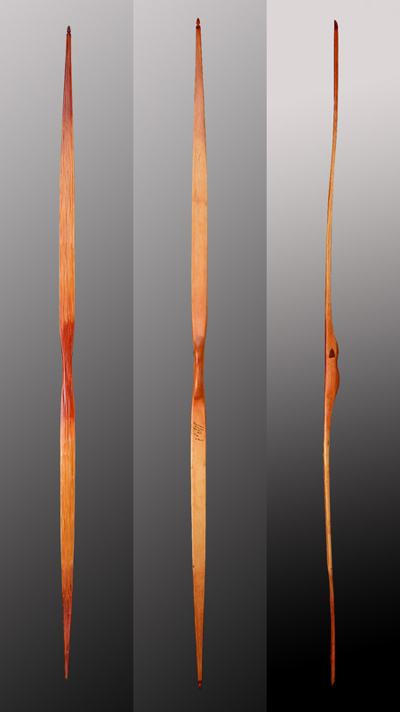

Self Bow
Info
A self bow is a bow made from a single piece of wood; although they can have a separate backing if desired. An effective self bow can be made from widely available materials in most parts of the world. It is important when selecting a piece of wood to be sure that the grain is relatively straight. Dense, hard woods are almost always better than soft woods because they are able to store energy better. Suitable woods are: Hickory, Osage Orange, Yew, Palm, Maple, Ash, Elm, and Oak. It is necessary that the bow is nearly the height of the archer if they are to allow a long draw.
What you need
- Straight grained piece of wood; recommended choices:
- Hickory
- Osage Orange
- Yew
- Palm
- Maple
- Ash
- Elm
- Oak
- A splitting wedge
- A hammer to drive it
- A sharp machete or Hachet
- A pocket knife
- Draw knife
- Cabinet scraper
- Tillering stick
- And lots of patience
Optional tools are:
Walkthrough
- Find a nice, straight limb about 5 or 6 feet long, preferably dead and standing of locust, mulberry or Osage. If ash or hickory wood, cut green and dried indoors is best. Even a dried 2" thick board will work if the grain is straight and properly oriented in the board.
- Split the stave after cutting it to length and select a piece that does not twist for the bow. Avoid knots with bad holes, splits or other obvious defects.
- Cut out the outline of the bow along the grain of the stave. Make the back of the bow (the side that faces the target) from the first annual ring of heartwood, or from the sapwood above it if the sap is thin.
- Mark off the handle area, then carve away the excess wood on the belly of the bow. The belly is the side that faces the archer. Carve it away until you can bend the bow over your chest just a little. Make sure that it bends evenly over the limbs of the bow.
- When it feels like you have a 75 pound bow carved out, whittle any kind of notch in the ends and tie some string on the bow to bend it slightly for the next step. The best bowstring material is dacron, but twisted gut, rawhide, twisted sinew or even nylon will do. "Tiller" the bow by scraping more wood from the belly of the limbs. Hold the blade (drawknife or spokeshave is best) at a right angle to the belly and shave or scrape off ribbons of wood to weaken the working part of the limbs in a slow and controlled manner. It helps to have a vise or a helper to hold the bow at this point.
- Occasionally pull on the string (gently at first) to ensure that the scraping is weakening the limbs equally, and stop when the poundage is about right. In the later stages a tillering board or stick can be used to hold the bow drawn while you continue to scrape. A bow gets stronger as it dries, so if you go a little too far in weakening it might work out okay.
- Wrap a handle on the mid section so that the arrow does not slap it loudly. Cloth, leather or woven bark is fine. Attach a final bow string that can consistently handle the weight of the bow at full draw.
- Check your tiller at full draw to make sure the limbs bend evenly. What makes a bow work is thinning the stave evenly along its length in order to share the burden of bending. Even the best wood cannot take being mistreated by weakening one spot too much. Take your time and be careful. A primitive bow should not be drawn more than one half of its length.
Images
